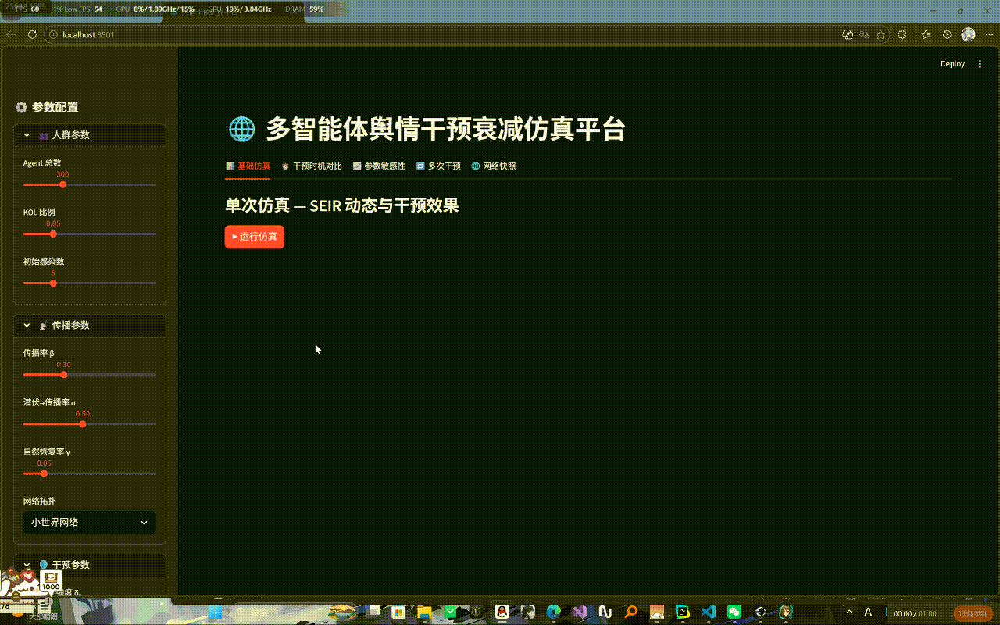

ZHOU SANGWEI
软件工程专业背景，专注 Python 数据分析、AI 全栈开发 与 工作流自动化。
毕设项目基于 SEIR 模型构建多智能体仿真平台；近期独立上线 AI 驱动的线上 TTRPG 应用「跑团桌」，覆盖认证、实时通信、AI 对话、CI/CD 全链路。
完全基于 Claude Sonnet 4.6 辅助开发，从零搭建并上线完整 SaaS 应用。覆盖用户认证、角色卡快照、实时消息、AI 主持人、掷骰检定、移动端适配、Vercel CI/CD 全链路。
Streamlit 仿真界面演示
